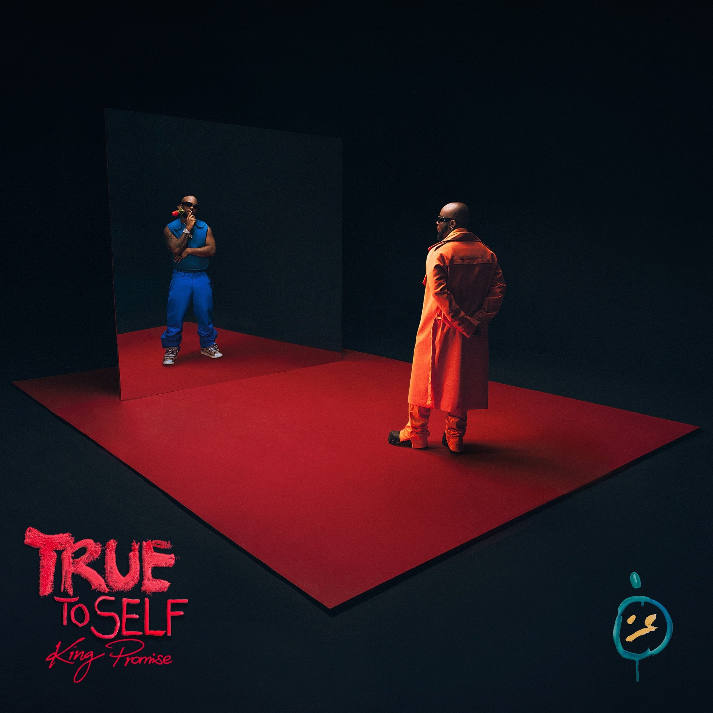

Who is king promise ?
“I’m here to supply the vibes, I’m the vibe supplier,” King Promise summarises playfully. Imagining what he wants people to take away from his music, he sees a potent concoction of happiness, dancing, laughter and unity. In short, “making the galdem want to whine and the mandem want to buy bottles.” Though his sound shifts and changes, drawing inspiration from everything around him and penning songs on everything from love to hustling to partying to family, the common vision is one of pure, visceral h’enjoyment.
Born and bred in Accra, Ghana, Gregory Bortey Promise Newman was enveloped in music from a young age. His “musichead” father inadvertently helped shape his genre and culture-spanning tastes: immersing him in everything from reggae to R&B to boybands to Ghanaian highlife. To this day, Promise finds himself pulling from and enjoying an incredibly wide range of sounds, both in his own sonics and also during his creative process. At the moment, he’s particularly feeling Ghanaian drill, the South African Amapiano scene and collaborating with UK artists like NSG and Headie One for his own music.
But in classic child-of-African-parents form, Promise was focused mainly on finishing school and securing a degree up until a few years ago: “[Music] was never really my plan. I always loved making music but it was just more of a passion.” After jumping in impromptu during a friend’s studio session, his curiosity and raw talent was sparked whilst in the booth. He started to hone in on his own sound, writing his own songs and collaborating with producers. In his last year of high school, his headmaster even heard him singing in class once and made him join the school choir for his final term. But it was while he was finishing university that everything changed for him. After releasing music officially in 2017, first on Soundcloud and then eventually across all the streaming services, Promise’s fanbase began to swell as word spread and buzz manifested locally, and before he and his family knew it, his career had taken off: “My parents were superstars in the area before they even knew [what was happening].”
Nowadays, his sights are firmly set on world domination, both for himself and his peers. “To be honest, I feel like Afrobeats is gonna be the biggest genre in the world in no time,” he asserts casually. Falling under a host of different names and guises, he cites everything from Drake’s first number one single One Dance (with Wizkid) to the rapid rise of Afroswing in Europe or the international stardom of the likes of Wiz, Burna Boy and Davido on their own as evidence of his theory – a scene already making waves across continents. He beams, “I’m just happy to contribute my quarter. Because as much as my sound is local,” inspired in part by the Ghanaian music he grew up on, “it’s also global as well.” In fact, one of his main goals – aside from making people feel good – is to help form the bridge between Africa, the diaspora and the rest of the world. A mission he is making sure to actualise in his upcoming project.
King Promise
Images of King promise

Video
Audio
More information about king promise
.